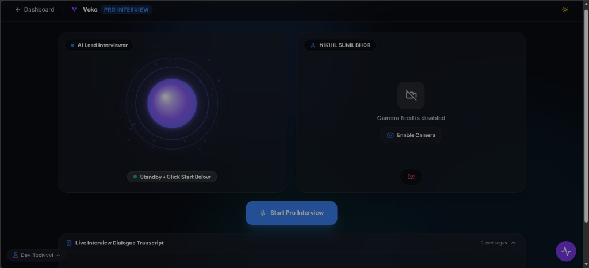
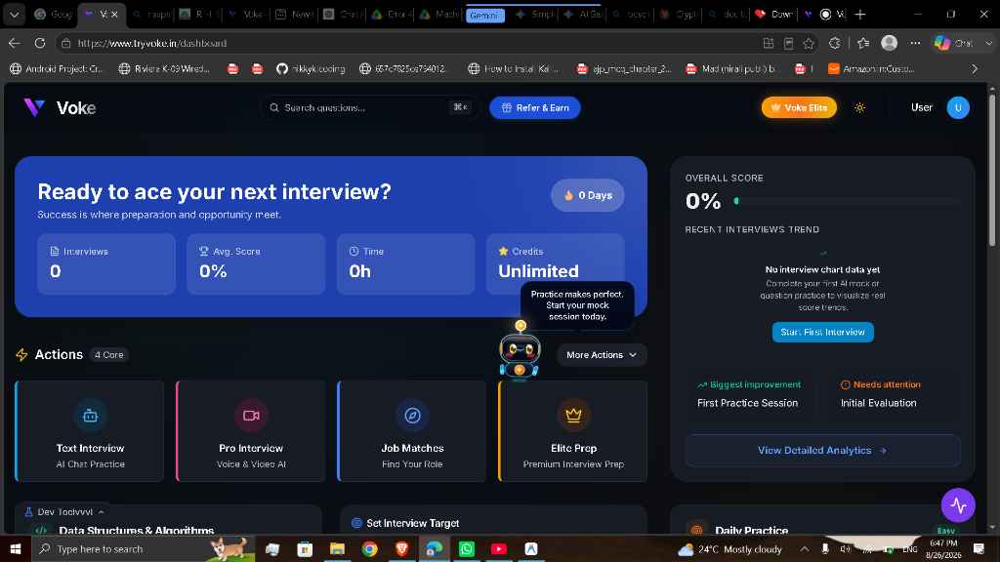
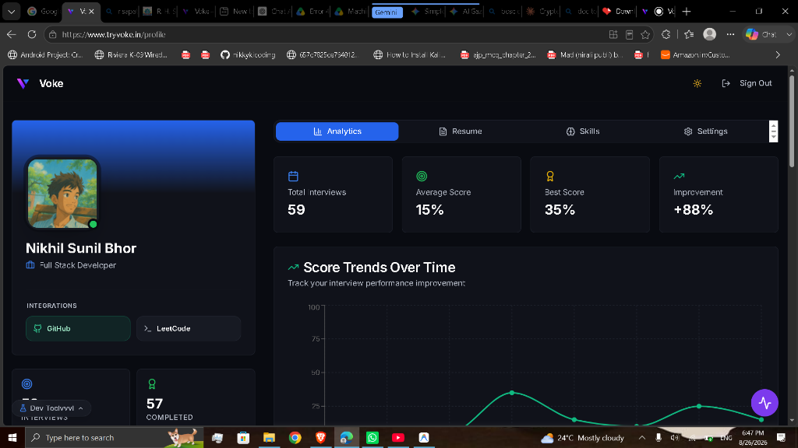

Voke AI
Institutional Placement Proposal
1. What is Voke?
Voke is a comprehensive, AI-driven career readiness platform designed to help students and candidates prepare for real-world corporate interviews. Our platform bridges the gap between academic learning and industry expectations by providing highly realistic, stress-tested interview practice environments.Instead of relying on limited manual mock interviews, Voke allows students to practice anytime, receive instant objective feedback, and improve their communication and technical skills before facing actual company recruiters.
2. Our Core Interview Modules
Voke offers three distinct interview practice modes to cater to different stages of a student's preparation journey:1. Text Interview (AI Chat Practice)
A low-pressure, chat-based interview environment where students can practice answering technical and behavioral questions at their own pace. It is perfect for initial preparation, helping students structure their thoughts, refine their vocabulary, and build foundational confidence without the pressure of a camera.2. Pro Interview (Voice & Video AI)
Our flagship highly-realistic mock interview. The student faces a sophisticated AI avatar through their webcam and microphone. The AI asks dynamic questions, listens to the student's vocal responses, and evaluates non-verbal cues like eye contact and body language. For technical roles, this includes a live coding compiler where students must write and explain their logic aloud.
3. Elite Prep (Premium Interview Prep)
An advanced, intensive preparation module tailored for highly competitive roles. This includes deep-dive scenario-based questions, rigorous technical evaluations, and personalized roadmap generation to help top-tier candidates clear interviews at top MNCs.
3. The College Placement Module
To support institutions in conducting mass hiring drives, we have built a dedicated College Placement Module. This allows placement cells to seamlessly manage and evaluate hundreds of students at once.How It Works:
- Create a Drive: The placement officer schedules a mock drive tailored to a visiting company.
- Invite Students: A secure, unique link is shared with the eligible batch.
- Simultaneous Evaluation: Hundreds of students take their Pro Video Interviews simultaneously from their own devices.
- Instant Analytics: As soon as the drive ends, the placement cell receives an aggregate report showing exactly which students met the passing criteria and who needs more preparation.
Student Analytics & Feedback
After every session, students receive an instant, detailed scorecard breaking down their performance:- Delivery & Articulation
- Body Language & Confidence
- Technical Accuracy
- Actionable Improvements

4. Value to the Institution
- Higher Placement Conversions: Students are significantly more confident and prepared for actual recruiters.
- Zero Manual Effort: Eliminate the logistical challenge of scheduling hundreds of manual mock interviews.
- Data-Driven Insights: Identify exact weakness areas across your cohort before the actual companies arrive.
Voke AI - Preparing the Next Generation of Talent.